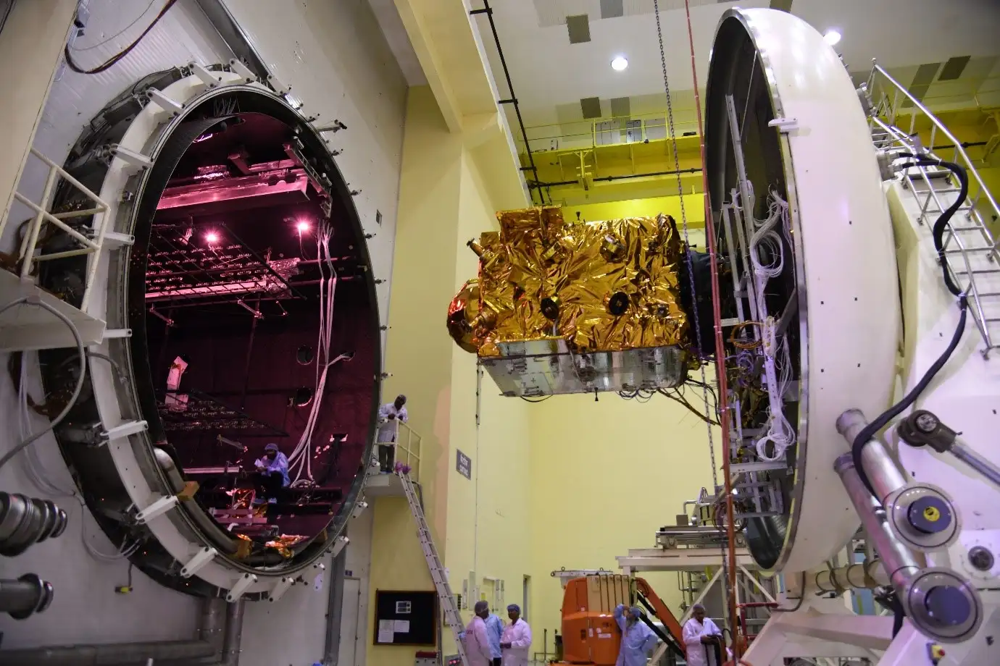
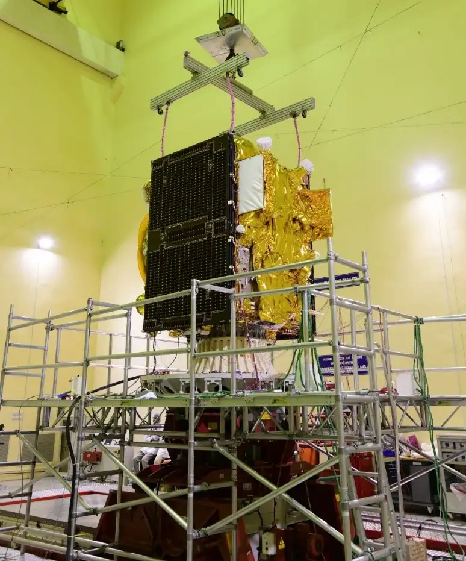

India's second-generation NavIC satellite. Launched January 24, 2025, NVS-02 occupies the 111.75°E slot previously held by IRNSS-1E — reinforcing the NavIC constellation with indigenous atomic clocks and a new L1 band signal for global receiver compatibility.
NVS-02 is the second satellite in ISRO's NVS (NavIC Variant Satellite) series — the next generation of India's indigenous navigation constellation. Where the original seven IRNSS satellites formed India's first GPS replacement, the NVS series is designed to upgrade, expand, and future-proof NavIC for the next decade.
Built at the U R Rao Satellite Centre (URSC) in Bengaluru on the I-2K satellite bus, NVS-02 carries a navigation payload with three frequency bands: L1 (1575.42 MHz), L5 (1176.45 MHz), and S (2492.028 MHz). The addition of L1 is the key upgrade — making NVS-02 compatible with the global ecosystem of GPS, Galileo, and GLONASS receivers without modification. Billions of existing devices can now pick up NavIC signals without hardware changes.
NVS-02 was placed in a geosynchronous orbit (GSO) at 111.75° East longitude — the same slot previously occupied by IRNSS-1E, which began degrading as its atomic clocks aged. NVS-02 is the direct, upgraded replacement.

The navigation payload aboard NVS-02 transmits signals on three bands simultaneously. L5 and S bands were present on the original IRNSS satellites; L1 is the key addition that makes NavIC interoperable with the global GNSS ecosystem. An L1 signal means NavIC works with every modern smartphone, smartwatch, car navigator, and aviation system without hardware upgrades.
A C-band ranging payload supports ground-based orbit determination — allowing ISRO's ground stations to precisely track the satellite's position and correct its ephemeris data, improving overall NavIC positioning accuracy for users.
The satellite's I-2K bus provides approximately 3 kW of power via dual deployable solar panels. It carries bipropellant propulsion for orbit raising and stationkeeping across a design life of approximately 12 years.
NVS-02's journey from assembly to launch spanned a tightly managed pre-shipment and launch campaign through December 2024 and January 2025, culminating in a successful liftoff on GSLV-F15 from Satish Dhawan Space Centre.
NVS-02 is not just a replacement satellite — it is an upgrade across every dimension. Compared to the IRNSS satellites it succeeds, NVS-02 adds a new frequency band (L1), uses newer atomic clock technology, operates on an updated satellite bus, and has a longer design life. Each NVS satellite that launches makes NavIC more robust, more compatible, and more independent.
The replacement of IRNSS-1E at 111.75°E is particularly significant. IRNSS-1E's degrading clocks had reduced positioning accuracy in the eastern part of NavIC's coverage zone. With NVS-02 in that slot, full accuracy is restored across India's full coverage footprint.
Together, NVS-01 (launched May 2023) and NVS-02 represent the first two operational second-generation NavIC satellites. As NVS-03 through NVS-11 follow, India's navigation infrastructure will achieve the coverage, accuracy, and clock redundancy of world-class GNSS systems — entirely sovereign, entirely Indian.
Swipe or click arrows to browse. Click any photo to zoom.